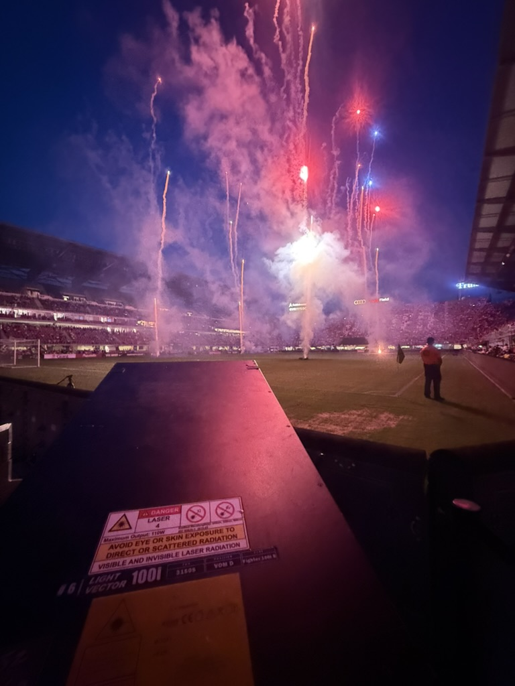

During Summer 2026, I worked as a design and programming intern at Image Engineering. Image specializes in live entertainment special effects shows, from concept to production.
During my time at the company, I worked mostly on laser and lighting programming. I helped create visuals and graphics, worked with technical equipment, assisted with show setup, and participated in safety testing. I also helped create concept photos for potential projects.